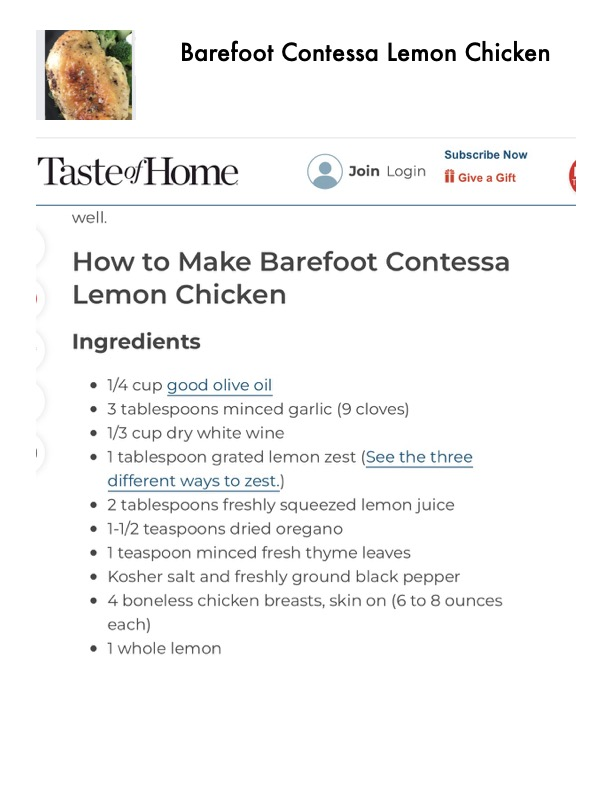

Barefoot Contessa Lemon Chicken

Original cookbook page 426
Ingredients
- V4 cup good olive oil
- 3 tablespoons minced garlic (9 cloves)
- 1/3 cup dry white wine
- 1 tablespoon grated lemon zest (See the th
- different ways to zest.)
- 2 tablespoons freshly squeezed lemon juic
- 1-1/2 teaspoons dried oregano
- 1 teaspoon minced fresh thyme leaves
- Kosher salt and freshly ground black pepp
- 4 boneless chicken breasts, skin on (6 to 8
- each)
- 1 whole lemon
Instructions
- Preheat the oven to 400 degrees F.
- Warm the olive oil in a small saucepan over medium heat. Add the garlic and cook for just 1 minute. Off the heat, add the white wine, lemon zest, lemon juice, oregano, thyme, and 1 teaspoon each of salt and pepper.
- Place the chicken breasts, skin side up, in a baking dish just large enough to hold them. Pour the oil mixture over the chicken.
- Slice the lemon and place a slice on each chicken breast.
- Bake for 30 to 40 minutes, depending on the size of the chicken breasts, until the chicken is done and the skin is lightly browned.
- Serve hot with the pan juices spooned over the top.
Recipe #426 from collection